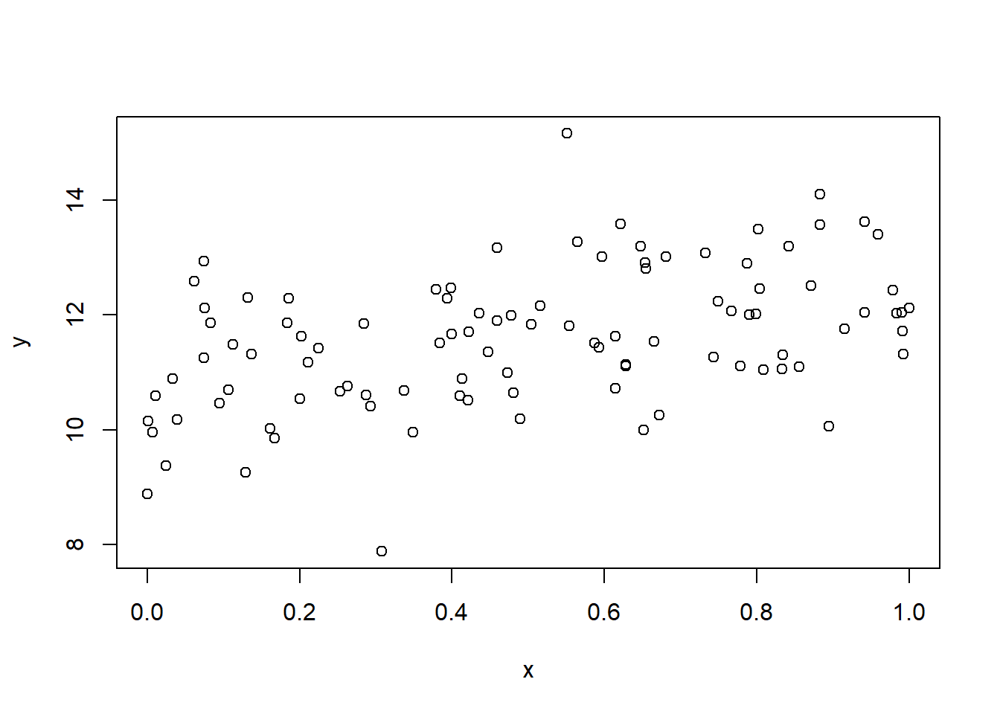

library(AER)
library(estimatr)9 現代的仮定のもとでの最小二乗法
前節において以下の仮定を置いていた.
- \((x_i,y_i)\) は独立同一分布にしたがう.
- \(E[u_i]=0\) である.
- \(u_i\) と \(x_i\) は独立である.
- \(u_i\) は正規分布にしたがう.
これらの仮定を緩めることで分析にどのような影響をあたえるのかを見ていく.
仮想的に以下のモデルを考える.
N <- 100
x<-runif(N)
w<-sample(c("H","T"),N,replace=TRUE)
y <- 10 + 2*x + ifelse(w=="H",1,0) + rnorm(N)
df <- data.frame(w,x,y)作図すると以下である.
plot(y~x)
9.1 正規性の仮定について
十分な観測値が得られるばあい, \(u_i\) が正規分布にしたがっていないくても, 中心極限定理定理より, 最小二乗法推定量は正規分布に近似できる.
ここの係数ゼロのティー検定について, ライブラリ AER を導入して coeftest を用いればよい. まず lm コマンドを用いて2つのモデルを推定する. fm1 は説明変数 x とダミー変数 w およびそれらの交差項を含むモデル, fm0 は x のみを含むモデルである.
fm1 <- lm(y~x*w,data=df)
fm0 <- lm(y~x,data=df)
coeftest(fm1,df=Inf)
##
## z test of coefficients:
##
## Estimate Std. Error z value Pr(>|z|)
## (Intercept) 11.09939 0.26017 42.6622 < 2.2e-16 ***
## x 1.93071 0.43035 4.4863 7.245e-06 ***
## wT -0.92569 0.36058 -2.5672 0.01025 *
## x:wT -0.27140 0.63831 -0.4252 0.67070
## ---
## Signif. codes: 0 '***' 0.001 '**' 0.01 '*' 0.05 '.' 0.1 ' ' 1coeftest コマンドは係数の検定を実行する関数である. オプション df=Inf を指定すると, ティー分布の代わりに標準正規分布（自由度無限大のティー分布）を用いた検定を実行する. これは大標本のもとでの漸近的な検定である. ただ十分なデータのもとではティー値のままでもよい.
同様に複数制約の場合, エフ検定統計量に制約の数を乗じた統計量が 自由度が制約数のカイ二乗分布にしたがうことが知られている. これをR で実施するには waldtest を用いればよい. waldtest コマンドは制約のあるモデル（fm0）と制約のないモデル（fm1）を比較して, 複数の係数がゼロかどうかを検定する関数である.
waldtest(fm0,fm1,test="Chisq")
## Wald test
##
## Model 1: y ~ x
## Model 2: y ~ x * w
## Res.Df Df Chisq Pr(>Chisq)
## 1 98
## 2 96 2 32.322 9.579e-08 ***
## ---
## Signif. codes: 0 '***' 0.001 '**' 0.01 '*' 0.05 '.' 0.1 ' ' 1オプション test="Chisq" を指定すると, エフ検定統計量に制約の数を乗じた統計量が自由度が制約数のカイ二乗分布にしたがうことを利用した検定を実行する. これは大標本での漸近的な検定である.
エフ検定も十分なデータのもとではそのままでよいであろう.
オプション test を付けなければエフ検定を実施する.
waldtest(fm0,fm1)
## Wald test
##
## Model 1: y ~ x
## Model 2: y ~ x * w
## Res.Df Df F Pr(>F)
## 1 98
## 2 96 2 16.161 8.923e-07 ***
## ---
## Signif. codes: 0 '***' 0.001 '**' 0.01 '*' 0.05 '.' 0.1 ' ' 1この結果はエフ統計量とそのP値を表示している.
これは anova コマンドと同じである.
anova(fm0,fm1)
## Analysis of Variance Table
##
## Model 1: y ~ x
## Model 2: y ~ x * w
## Res.Df RSS Df Sum of Sq F Pr(>F)
## 1 98 107.855
## 2 96 80.688 2 27.167 16.161 8.923e-07 ***
## ---
## Signif. codes: 0 '***' 0.001 '**' 0.01 '*' 0.05 '.' 0.1 ' ' 1anova コマンドも2つのモデルを比較してエフ検定を実行する.
複数制約の検定としてLM検定というのもある. 制約付きの回帰分析を実行し, その残差を制約なしのモデルの説明変数に回帰する. その決定係数に観測数を掛けた統計量が自由どが制約の数のカイ二乗分布にしたがうことが知られている.
以下ではLM検定統計量を手動で計算している.
lmt <- lm(I(resid(fm1))~w*x,data=df)
(lmt <- nrow(df)*summary(lmt)$r.squared)
## [1] 2.061264e-29
1-pchisq(lmt,df=1)
## [1] 1最初の行では, fm1 の残差（resid(fm1)）を被説明変数とし, w*x を説明変数として回帰分析を実行している. 2行目では, その決定係数（summary(lmt)$r.squared）に観測数（nrow(df)）を掛けてLM検定統計量を計算している. 3行目では, pchisq コマンドを用いて自由度1のカイ二乗分布のもとでP値を計算している.
9.2 誤差項と説明変数が独立の仮定について
また \(u_i\) と \(x_i\) は独立でなく, \(u_i\) と \(x_i\) が無相関という弱い条件のもとでも, 一致推定量であることが知られている. ただ不偏推定量は保証できない. また 線形推定量のなかで最小の分散とも言えない.1 また独立のときの標準誤差の推定量が一致推定量でない.
ただし, 別の分散のもとで正規分布に近似できることがしられている.2 つまり, 説明変数と誤差項が無相関であるが, 独立とまでは言い切れない場合, 最小二乗推定量を実行した際, 別の方法で分散を推定する必要がある. この別の分散をロバスト分散という.
R でロバスト分散を推定するにはパッケージ AER を導入するのが簡単である. 次のコマンド coeftest を実行すればよい.
coeftest(fm1,vcov=vcovHC)
##
## t test of coefficients:
##
## Estimate Std. Error t value Pr(>|t|)
## (Intercept) 11.09939 0.23176 47.8919 < 2.2e-16 ***
## x 1.93071 0.35925 5.3742 5.382e-07 ***
## wT -0.92569 0.33875 -2.7326 0.00748 **
## x:wT -0.27140 0.62498 -0.4342 0.66508
## ---
## Signif. codes: 0 '***' 0.001 '**' 0.01 '*' 0.05 '.' 0.1 ' ' 1coeftest コマンドのオプション vcov=vcovHC を指定することで, 不均一分散に頑健な（heteroskedasticity-consistent）標準誤差を用いた検定が実行される. vcovHC は分散共分散行列をロバスト推定する関数である.
先の値と標準誤差が違っていることが確認できるであろう. ただこの値は STATA と少し異なっている. STATA と同じにするには
coeftest(fm1,vcov=vcovHC(fm1,type="HC1"))
##
## t test of coefficients:
##
## Estimate Std. Error t value Pr(>|t|)
## (Intercept) 11.09939 0.22645 49.0153 < 2.2e-16 ***
## x 1.93071 0.34811 5.5463 2.57e-07 ***
## wT -0.92569 0.32974 -2.8074 0.00605 **
## x:wT -0.27140 0.60031 -0.4521 0.65222
## ---
## Signif. codes: 0 '***' 0.001 '**' 0.01 '*' 0.05 '.' 0.1 ' ' 1としなければならない. オプション type="HC1" は小標本補正を施したロバスト分散推定量を指定している. これはSTATAのデフォルト設定と同じである.
またティー分布でなく正規分布とすることもできる.
coeftest(fm0,vcov=vcovHC,df=Inf)
##
## z test of coefficients:
##
## Estimate Std. Error z value Pr(>|z|)
## (Intercept) 10.55527 0.19850 53.1742 < 2.2e-16 ***
## x 2.07994 0.35927 5.7893 7.068e-09 ***
## ---
## Signif. codes: 0 '***' 0.001 '**' 0.01 '*' 0.05 '.' 0.1 ' ' 1オプション df=Inf を追加することで, 標準正規分布を用いた検定を実行する.
複数の係数についての検定は waldtest を実行すればよい.
waldtest(fm0,fm1,vcov=vcovHC)
## Wald test
##
## Model 1: y ~ x
## Model 2: y ~ x * w
## Res.Df Df F Pr(>F)
## 1 98
## 2 96 2 14.906 2.304e-06 ***
## ---
## Signif. codes: 0 '***' 0.001 '**' 0.01 '*' 0.05 '.' 0.1 ' ' 1オプション vcov=vcovHC を指定することで, ロバスト分散を用いたワルド検定を実行する.
先の結果はエフ検定であるが, カイ二乗検定を実施するには以下を実施すればよい.
waldtest(fm0,fm1,vcov=vcovHC, test="Chisq")
## Wald test
##
## Model 1: y ~ x
## Model 2: y ~ x * w
## Res.Df Df Chisq Pr(>Chisq)
## 1 98
## 2 96 2 29.811 3.361e-07 ***
## ---
## Signif. codes: 0 '***' 0.001 '**' 0.01 '*' 0.05 '.' 0.1 ' ' 1オプション test="Chisq" を追加することで, エフ統計量の代わりにカイ二乗統計量を用いた検定を実行する.
最近開発されたパッケージ estimatrのコマンド lm_robust を用いるとロバスト分散のもとの推定値が簡単に計算できる.
fm2<- lm_robust(y~x*w,data=df)
summary(fm2)
##
## Call:
## lm_robust(formula = y ~ x * w, data = df)
##
## Standard error type: HC2
##
## Coefficients:
## Estimate Std. Error t value Pr(>|t|) CI Lower CI Upper DF
## (Intercept) 11.0994 0.2267 48.9532 1.070e-69 10.649 11.5495 96
## x 1.9307 0.3500 5.5160 2.929e-07 1.236 2.6255 96
## wT -0.9257 0.3308 -2.7985 6.206e-03 -1.582 -0.2691 96
## x:wT -0.2714 0.6062 -0.4477 6.554e-01 -1.475 0.9320 96
##
## Multiple R-squared: 0.4424 , Adjusted R-squared: 0.4249
## F-statistic: 31.23 on 3 and 96 DF, p-value: 3.56e-14lm_robust コマンドは回帰分析を実行し, デフォルトでロバスト標準誤差を計算する. これにより lm と coeftest を別々に実行する手間が省ける.
オプション se_type = "stata" を用いればSTATAと同じ計算が可能である.
また以下のオプションをつければ分散均一の場合も計算できる.
fm3<- lm_robust(y~x*w,data=df,se_type = "classical")
summary(fm3)
##
## Call:
## lm_robust(formula = y ~ x * w, data = df, se_type = "classical")
##
## Standard error type: classical
##
## Coefficients:
## Estimate Std. Error t value Pr(>|t|) CI Lower CI Upper DF
## (Intercept) 11.0994 0.2602 42.6622 3.266e-64 10.583 11.6158 96
## x 1.9307 0.4304 4.4863 2.011e-05 1.076 2.7849 96
## wT -0.9257 0.3606 -2.5672 1.180e-02 -1.641 -0.2099 96
## x:wT -0.2714 0.6383 -0.4252 6.717e-01 -1.538 0.9956 96
##
## Multiple R-squared: 0.4424 , Adjusted R-squared: 0.4249
## F-statistic: 25.38 on 3 and 96 DF, p-value: 3.55e-12オプション se_type = "classical" を指定すると, 通常の（ロバストでない）標準誤差を計算する. これは lm コマンドの結果と同じである.
9.3 分散均一の検定
誤差項が説明変数と独立のときと無相関のときでは標準誤差の推定量が異なる. 正確にいうと, 条件付き分散が説明変数に依存するかどうかによって標準誤差の推定量が異なる. このことは分散均一と呼ばれている.
誤差項の分散が均一かどうかは検定可能である. 有名な検定方法としてBP (Breusch-Pagan) 検定というものがある. BP検定は帰無仮説が分散均一で, 対立仮説が分散が説明変数と線形関係になっている場合の検定である.
残差の自乗を被説明変数として回帰分析をおこない, その決定係数に観測数をかけたものが検定統計量となる. 以下ではBP検定統計量を手動で計算している.
bpt <- lm(I(resid(fm1)^2)~w*x,data=df)
(bpt <-nrow(df)*summary(bpt)$r.squared)
## [1] 0.6434183
1-pchisq(bpt,df=3)
## [1] 0.8864247最初の行では, fm1 の残差の二乗（resid(fm1)^2）を被説明変数とし, w*x を説明変数として回帰分析を実行している. I() 関数は, 数式内で算術演算を実行するために用いる. 2行目では, その決定係数に観測数を掛けてBP検定統計量を計算している. 3行目では, 自由度3（説明変数の数）のカイ二乗分布のもとでP値を計算している.
ここでの例ではP値が5%を超えているので帰無仮説を棄却できないので, 分散均一を仮定してよいことが示唆されている.
R では bptest コマンドを用いて簡単にBP検定を実施できる.
bptest(fm1)
##
## studentized Breusch-Pagan test
##
## data: fm1
## BP = 0.64342, df = 3, p-value = 0.8864bptest コマンドは自動的にBP検定統計量とP値を計算してくれる.
これまでのBPテストは誤差項の分散が説明変数の線形関係あることを暗黙に仮定している. 非線形性を考慮するために説明変数の二次項を導入した分散不均一性の検定をホワイト検定という. 説明変数が複数ある場合ホワイト検定は煩雑になるため, 被説明変数の予測値を使って計算することがある. そのときホワイトテストは以下で実施する.
wht <- lm(I(resid(fm1)^2)~fitted(fm1)+I(fitted(fm1)^2),data=df)
(wht <- nrow(df)*summary(wht)$r.squared)
## [1] 1.442085
1-pchisq(wht,df=2)
## [1] 0.4862451最初の行では, 残差の二乗を被説明変数とし, 予測値（fitted(fm1)）とその二乗を説明変数として回帰分析を実行している. これにより分散の非線形性を検出できる. 2行目では, その決定係数に観測数を掛けてホワイト検定統計量を計算している. 3行目では, 自由度2のカイ二乗分布のもとでP値を計算している.
ホワイト検定でも分散均一が示唆されている.
もしくは bptest コマンドに予測値とその二乗を指定して実行することもできる.
bptest(fm1,~fitted(fm1)+I(fitted(fm1)^2))
##
## studentized Breusch-Pagan test
##
## data: fm1
## BP = 1.4421, df = 2, p-value = 0.4862このコマンドは上記の手動計算と同じ結果を返す.
このように分散均一性は検定することが可能であるが, そもそも分散均一が疑われる場合は, ロバスト分散で推定するので十分であるため最近の実証分析ではこの検定は実施されない.